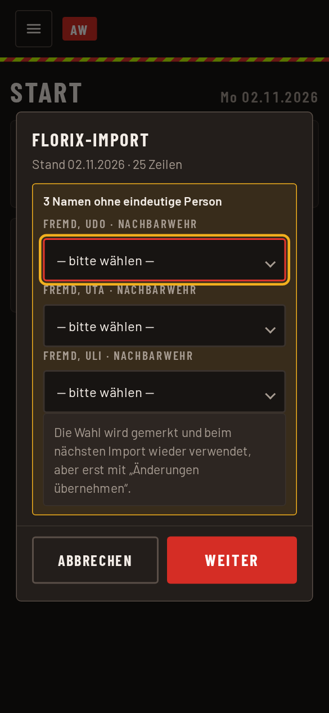
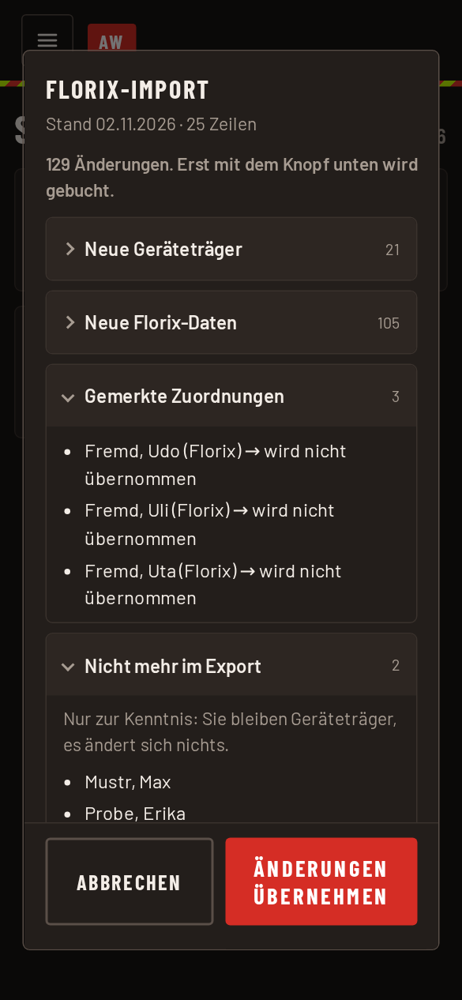
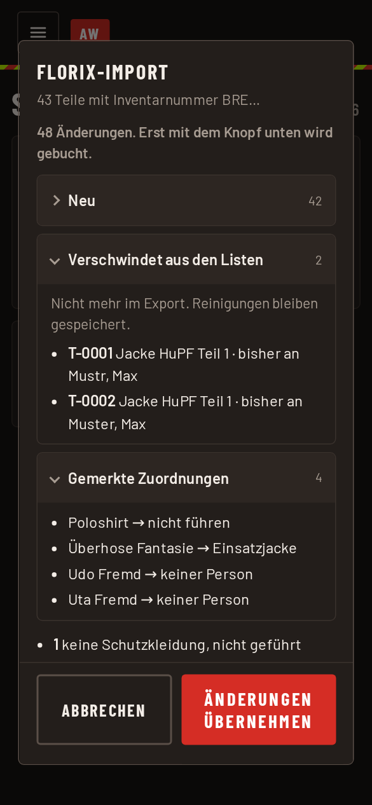

Atemschutz und Kleidung: Florix-Import
Die Module Atemschutz und Kleidung übernehmen ihre Daten aus Florix. Dafür gibt es in beiden den Knopf Florix-Import. Das ist Sache des Atemschutz-Admins bzw. des Kleidung-Admins, auch der Admin darf es. Vor dem Einbuchen zeigt die App eine Liste aller Änderungen. Erst der Knopf „Änderungen übernehmen“ schreibt etwas in die Datenbank.
So geht es
- Den Export aus Florix als Datei auf das Gerät holen:
- für den Atemschutz den Export „Tauglichkeiten Atemschutz“,
- für die Kleidung den Export „persönliche Ausrüstung“.
- Im Modul auf Florix-Import tippen und die Datei wählen. Die Datei wird im Browser gelesen. Geburtsdaten verlassen das Gerät nicht.
- Kennt die App einen Namen oder eine Bezeichnung noch nicht, fragt sie zuerst danach (siehe unten) und geht mit Weiter zur Liste.
- Die Änderungsliste lesen und mit Änderungen übernehmen buchen, oder mit dem Knopf links daneben verwerfen.
Bis zum letzten Tipp wird nichts geschrieben, auch keine gemerkte Zuordnung.
Offene Zuordnungen

Steht ein Name im Export, den die App nicht eindeutig einer Person zuordnen kann, wählt ihr die Person aus der Liste oder „nicht übernehmen“. Bei der Kleidung gilt das auch für Bezeichnungen: Ihr legt fest, zu welcher Artikelart eine neue Bezeichnung gehört, oder wählt „nicht führen“. Die Wahl wird gemerkt, aber erst mit „Änderungen übernehmen“.
Die Änderungsliste
Die Liste ist nach Gruppen sortiert. Jede Gruppe zeigt in der Überschrift die Anzahl. Gruppen bis zu zehn Einträgen sind aufgeklappt, größere zugeklappt. Antippen klappt sie auf. Unveränderte Einträge stehen nur als Zahl am Ende. Die Knöpfe bleiben unten stehen, auch wenn die Liste lang ist.
Atemschutz

- Neue Geräteträger: Diese Personen bekommen das Kennzeichen AGT.
- Neue Florix-Daten: je Person und Nachweisart das bisherige Datum und das neue, oder „neu“.
- Haken „In Florix eingetragen“: Nachweise, die den Haken durch den Import bekommen, weil Florix sie abdeckt.
- Gemerkte Zuordnungen: Name aus Florix und die gewählte Person.
- Nicht mehr im Export: nur zur Kenntnis. Diese Personen bleiben Geräteträger, es ändert sich nichts.
Kleidung

Ein Teil erkennt die App immer an seinem Barcode (der Inventarnummer). Steht ein Barcode, den die App noch nicht kennt, im Export, ist das ein neues Teil, auch wenn Florix es unter derselben Identifikation führt wie ein altes. Steht ein Barcode doppelt im Export, lehnt die App die Datei ab.
- Neu: Barcode, Bezeichnung, Größe und wem das Teil ausgegeben ist.
- Geändert: je geändertem Feld der alte und der neue Wert, etwa Größe, Standort oder „Ausgegeben an“.
- Bisher nur in der App, jetzt aus Florix: Teile, die ihr selbst erfasst hattet und die nun in Florix stehen. Florix gewinnt.
- Verschwindet aus den Listen: Teile, die nicht mehr im Export stehen. Ihre Reinigungen bleiben gespeichert.
- Florix-Identifikation wechselt das Teil: Florix führt ein Teil unter einer neuen Inventarnummer. Die Identifikation geht vom alten auf das neue Teil über, das alte verschwindet aus den Listen.
- Gemerkte Zuordnungen: neue Zuordnungen von Bezeichnungen und Namen.
Teile, die keine Schutzkleidung sind, führt die App nicht. Sie stehen nur als Zahl in der Liste.
Keine Änderungen
Bringt der Export nichts Neues, steht dort „Der Export bringt keine Änderungen.“ Der Knopf heißt dann Stand übernehmen. Er vermerkt nur Datum und Stichtag des Imports, damit die Statuszeile des Moduls stimmt.
Wenn sich zwischendurch etwas ändert
Ändert jemand anderes die Daten, während ihr die Liste anseht, bucht die App nicht stillschweigend einen anderen Stand. Sie meldet „Der Stand hat sich geändert“ und lädt die Liste neu. Prüft sie noch einmal und übernehmt dann.
Hinweis: Der Import ändert nur die Daten in dieser App. In Florix selbst wird nichts verändert.